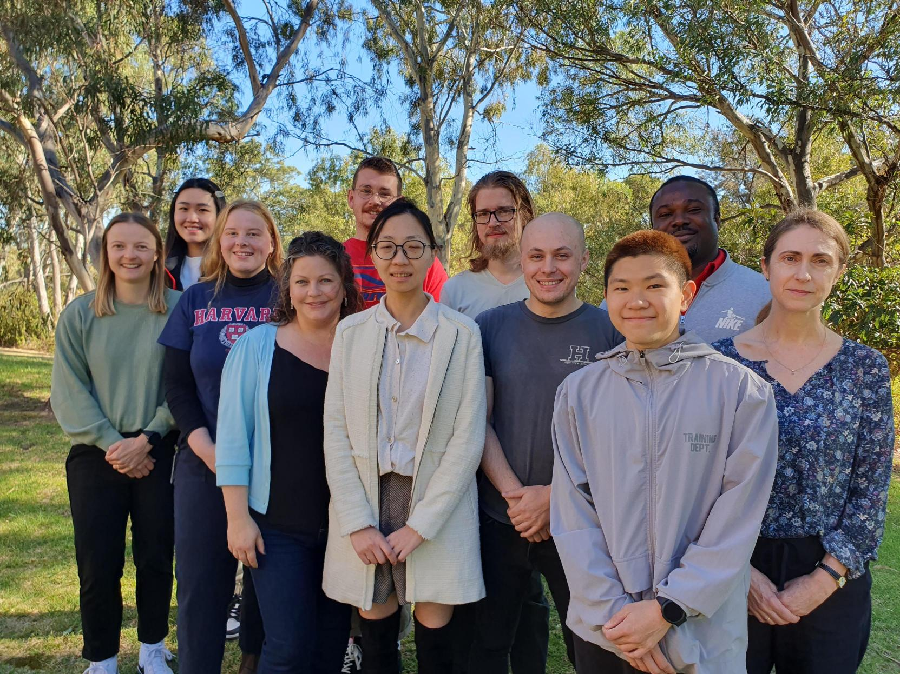

Niina marni · Hello
Engineering plants and their cell walls for a sustainable future — on Earth and in Space.
A plant synthetic biology and glycobiology group based at the Waite Campus, Adelaide University, Australia
Our team is part of the School of Agriculture, Food and Wine and the Waite Research Institute at Adelaide University (known as Tirkangkaku in Kaurna language), where Jenny is Professor of plant synthetic biology. We use synthetic biology to develop sustainable novel crops for food and bioproducts, while advancing our understanding of plant glycosylation and secondary metabolism.
Our work includes developing plants to support astronauts on long-duration space missions, as part of the Australian Research Council (ARC) Centre of Excellence for Plants for Space (P4S). This has dual benefits: advancing space exploration, and enabling sustainable closed-environment agriculture (vertical farming) here on Earth. We also train the next generation of plant biotechnology researchers through the ARC Training Hub for Future Crops Development, engineer new crops to produce renewable carbon products through the ARC Research Hub for Engineering Plants to Replace Fossil Carbon, and help provide gene editing and transformation infrastructure through the NCRIS-funded Plant SynBio Australia (Adelaide node).
Our long-standing work on plant cell wall biosynthesis — using it to engineer feedstock crops for the bioeconomy — continues here, with Adelaide University now a Joint BioEnergy Institute (JBEI) partner institution. JBEI-funded researchers work here in Adelaide alongside our U.S.-based team members.
We work/have recently worked on a number of plant species including:
- model systems such as Arabidopsis thaliana and Nicotiana benthamiana (benthi)
- bioenergy and grain crops, (sorghum, wheat, barley, switchgrassand poplar)
- horticultural and novel protein crops (duckweed, lettuce).
We are also the home of the Australian Collection of Duckweed clones ACDC, a collection of Austrlian duckweeds (Lemnaceaea).
Jenny is a handling editor at The Plant Journal (a society journal of SEB) and a review editor at Plant and Cell Physiology (the journal of JSPP). Support your society journals — and get in touch if you'd like to talk about whether your work might suit either one.

(L–R: Ali, Raven, Charlotte, Jenny, Morgs, Maddy, Art, Ryan, Josh, Chigozie and Wendy.)